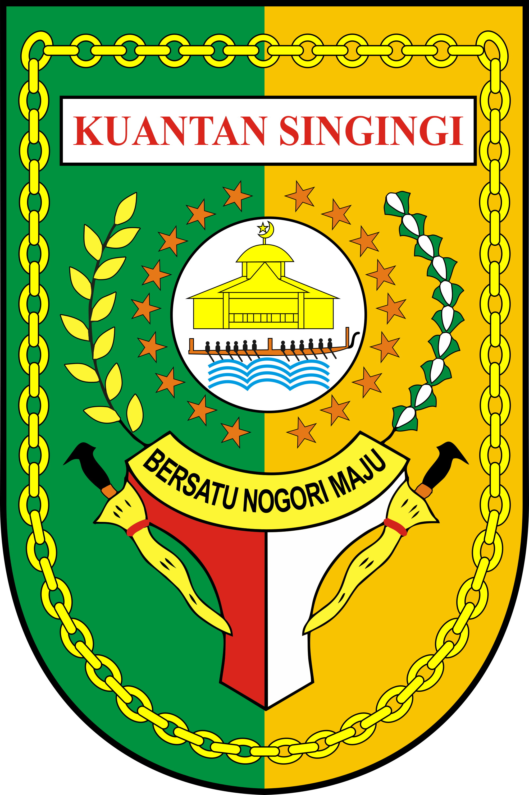
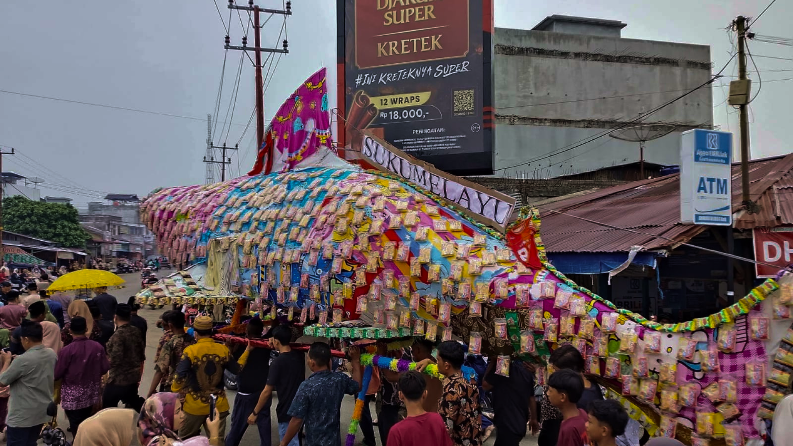
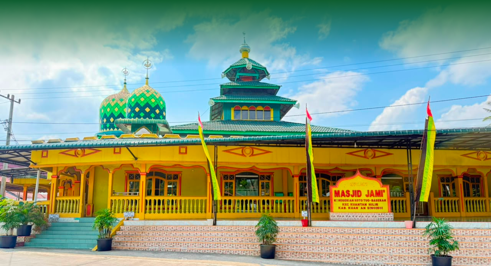
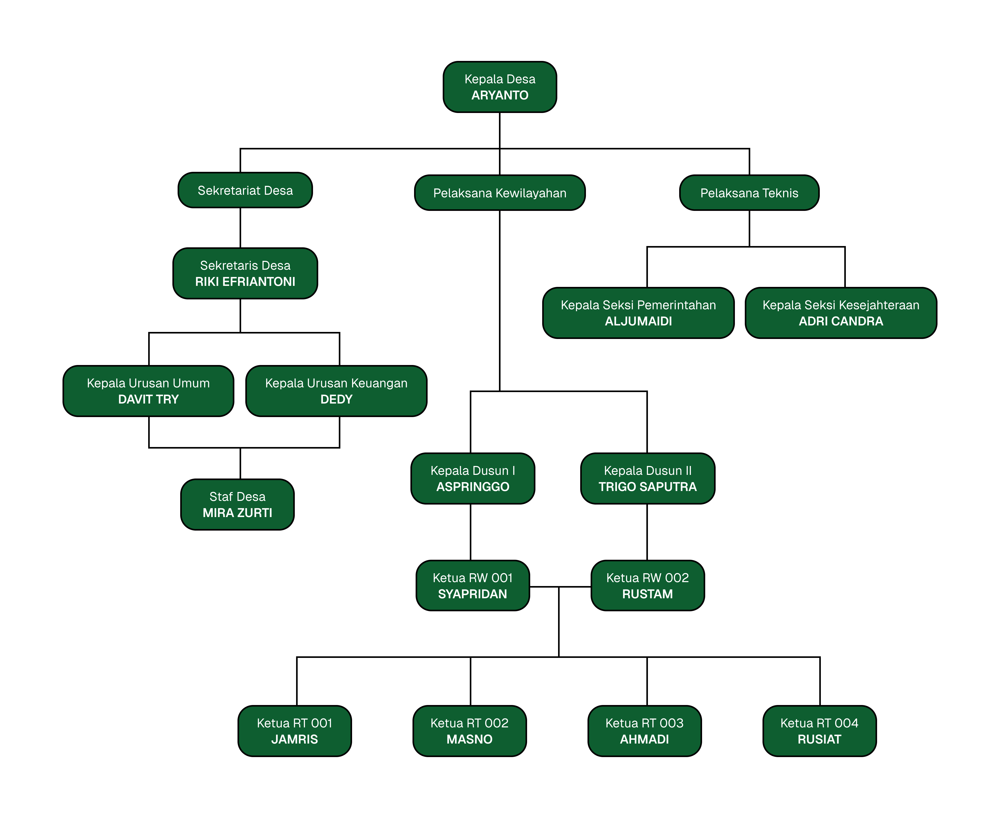
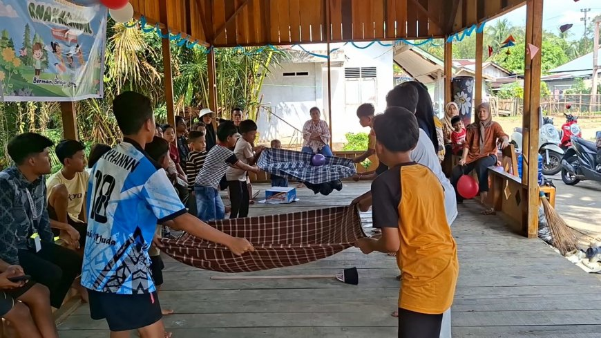
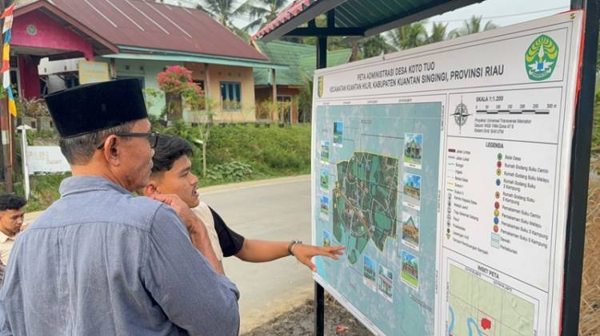
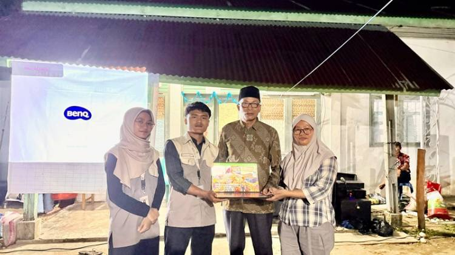

Kecamatan Kuantan Hilir

Kecamatan Kuantan Hilir, Kabupaten Kuantan Singingi, Provinsi Riau.
Assalamu'alaikum warahmatullahi wabarakatuh.
Puji syukur kepada Tuhan Yang Maha Esa atas rahmat dan karunianya sehingga pembuatan website Desa Koto Tuo Baserah ini dapat selesai dengan baik.
Saya selaku Kepala Desa Koto Tuo Baserah mengucapkan terima kasih banyak kepada semua pihak yang terlibat, terutama kepada Mahasiswa KUKERTA Universitas Riau 2026 yang telah berpartisipasi dengan sangat dalam pembuatan website ini.
Adanya website desa ini diharapkan menjadi dasar penyedia informasi yang akurat mengenai keadaan desa, potensi desa, sumber daya manusia atupun alam yang ada di desa Koto Tuo, sehingga website ini dapat menarik minat pembaca untuk lebih mengenal potensi Desa Koto Tuo Baserah.
Demikian, yang dapat disampaikan. Kami selaku Kepala Desa Koto Tuo Baserah mengucapkan terima banyak dan mohon maaf atas segala kekurangan.
Wassalamu'alaikum warahmatullah wabarakatuh.
Profil Desa
Desa Koto Tuo merupakan salah satu desa yang berada di Kecamatan Kuantan Hilir, Kabupaten Kuantan Singingi, Provinsi Riau. Secara etimologis, nama "Koto Tuo" berasal dari bahasa Melayu, yaitu koto yang berarti kampung atau negeri, sedangkan tuo berarti tua atau lama. Penamaan tersebut mencerminkan bahwa desa ini merupakan salah satu permukiman tertua di wilayah Kuantan Hilir. Berdasarkan kajian toponimi, penamaan desa di Kecamatan Kuantan Hilir umumnya dipengaruhi oleh kondisi geografis, sejarah masyarakat, serta nilai-nilai budaya yang berkembang di lingkungan setempat (Zikhri et al., 2023). Nama Koto Tuo sendiri merepresentasikan keberadaan sebuah kampung tua yang telah menjadi pusat kehidupan masyarakat sejak masa awal pembentukan Kenegerian Baserah.
Desa Koto Tuo termasuk dalam wilayah Kenegerian Baserah, salah satu kenegerian tertua di Kabupaten Kuantan Singingi yang hingga kini masih mempertahankan sistem adat Melayu. Kehidupan masyarakat tidak hanya berpedoman pada sistem pemerintahan desa, tetapi juga dipengaruhi oleh lembaga adat yang berperan dalam menjaga nilai-nilai sosial, budaya, dan kearifan lokal. Berbagai tradisi adat masih dilaksanakan secara turun-temurun sebagai bentuk penghormatan terhadap warisan leluhur.
Selain kekayaan adat, Desa Koto Tuo juga memiliki peninggalan sejarah berupa Masjid Jami' Koto Tuo, yang diperkirakan telah berdiri sejak awal abad ke-19. Masjid ini menjadi salah satu bukti berkembangnya penyebaran agama Islam di wilayah Baserah sekaligus menjadi pusat kegiatan keagamaan, pendidikan, dan sosial masyarakat. Keberadaan rumah-rumah godang, lembaga adat, serta berbagai tradisi yang masih dipertahankan menunjukkan bahwa Desa Koto Tuo memiliki nilai sejarah dan budaya yang penting bagi Kabupaten Kuantan Singingi. Masyarakat desa tetap berupaya mempertahankan nilai-nilai budaya lokal sebagai identitas desa sehingga pembangunan yang dilakukan berjalan selaras dengan pelestarian warisan budaya.

Desa Koto Tuo berada di Kecamatan Kuantan Hilir, Kabupaten Kuantan Singingi, Provinsi Riau. Desa ini memiliki luas wilayah 4,40 km². Secara administratif, Desa Koto Tuo berbatasan dengan Desa Banuaran di sebelah utara, Kelurahan Pasar Usang Baserah di sebelah selatan, Desa Pulau Madinah di sebelah timur, dan Desa Rawang Bonto di sebelah barat.
Peta Desa >Orang
Penduduk
Orang
Laki-laki
Orang
Perempuan

Tradisi Tahunan
Salah satu tradisi budaya yang masih lestari adalah Rayo Onom atau Hari Raya Keenam Syawal. Tradisi ini merupakan perayaan khas masyarakat Kenegerian Baserah yang dilaksanakan enam hari setelah Idulfitri. Rangkaian kegiatan diawali dengan pelepasan rombongan Datuk Penghulu, dilanjutkan arak-arakan sampek-sampek, kunjungan ke Rumah Godang Empat Suku, serta pertunjukan pencak silat di Balai Pisah. Tradisi ini tidak hanya menjadi sarana mempererat silaturahmi masyarakat, tetapi juga berfungsi sebagai media pelestarian adat istiadat dan identitas budaya masyarakat Melayu Kuantan. Pemerintah Provinsi Riau bahkan mendorong agar tradisi Sampek-sampek Rayo Onom dan budaya Buah Golek memperoleh pengakuan sebagai Warisan Budaya Takbenda Indonesia.

riaucerdas.com

datariau.com

datariau.com